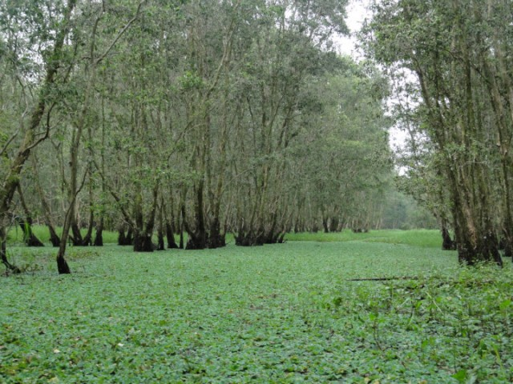
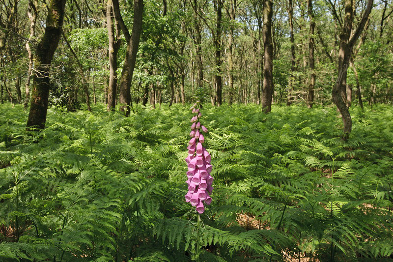
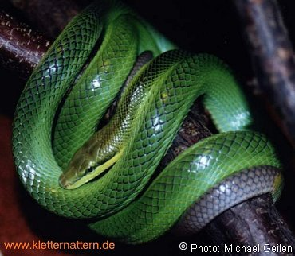
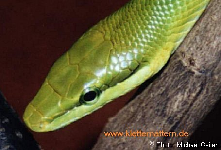
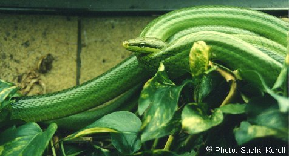

De rattenslang komt voor in Azië; Cambodja, de Filipijnen, Indonesië, Laos, Maleisië, Myanmar, Thailand en Vietnam. In tegenstelling tot de meeste andere gladde slangen leeft deze soort meestal in bomen rond open plekken in het bos of bosranden!

De rattenslang, ookwel korenslang genoemd, is een veel gehouden slang die vrij ‘tam’ is en altijd actief, daardoor zijn ze ook heel leuk om te nemen als huisdier!
Door gebruik van het Jacobson orgaan kunnen rattenslangen enorm goed ruiken, dit orgaan ligt boven het gehemelte van een slang, de ogen van een rattenslang nemen vooral bewegingen waar.
De roodstaart rattenslang staat ook bekend als de 'Gonyosoma oxycephalum'
De spitskopslang wordt maximaal 2,5 meter maar meestal kleiner.
De kleur is meestal groen met soms bruine tinten en een lichtere buik.
De soort is makkelijk van andere slangen te onderscheiden door de rode staartpunt.
als ze ouder worden veranderd de staartkleur echter meestal grijs tot zwart wordt.
De slang klimt meters hoog en jaagt op vogels en kleine zoogdieren.
De achtergronden zijn allemaal woonplaatsen van de rattenslang! (behalve deze dan natuurlijk!)
Je kan de roodstaart rattenslang ook zien in Artis!
